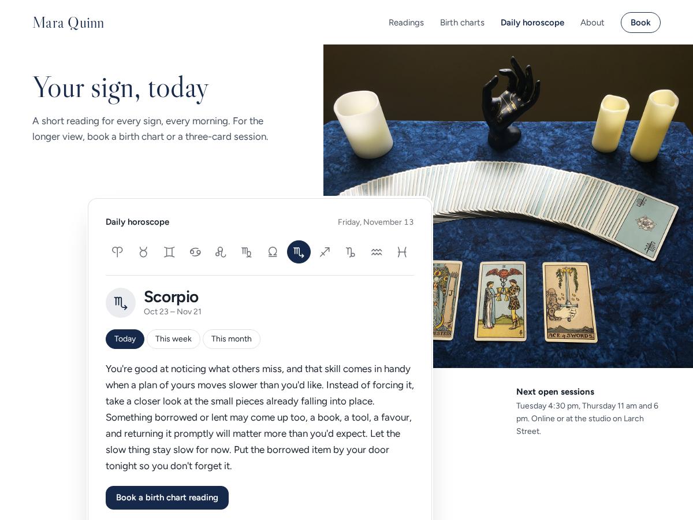

Horoscope
A fresh horoscope for every sign, every day
- Today's reading for all 12 zodiac signs
- Written fresh every day, in 10 languages
- Remembers each visitor's star sign
- Week and month readings (Premium)
- Your own voice and a booking button (Premium)

What it does
A daily horoscope for your site, with a new reading for each of the 12 zodiac signs written fresh every day. Visitors tap their star sign and read today's text: 60 to 90 words about ordinary things like a message, a chore, a walk or a shared meal. The widget remembers their sign, so the next visit opens straight on it.
The readings stay light. They never predict health, money, death or legal trouble, and they never tell anyone their fate. Each one ends with a small practical suggestion, and a line under the text says the readings are for entertainment.
You choose the language (English, German, Spanish, French, Portuguese, Italian, Dutch, Polish, Turkish or Japanese), the heading, the sign shown first and the colours. The widget uses your site's font and fits anything from a phone screen to a wide section.
Premium is for astrologers, tarot readers and coaches. Your readings are written for your site alone, in your voice: your name, a few lines about your style, and the things you want left out. Week and Month tabs appear next to Today, and a button under each reading opens one of your booking services or any link you choose. The credit link goes away.
Price
Free
- Daily reading for all 12 signs
- 10 languages, your colours and heading
- Visitors' signs remembered
- Small credit link
Premium
$5/month, yearly $4/month (20% off)
- Readings written in your own voice
- Week and Month tabs
- Booking button under each reading
- Remove the credit link